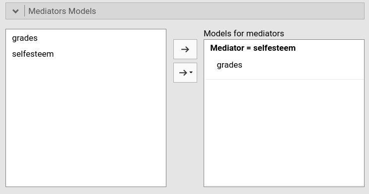
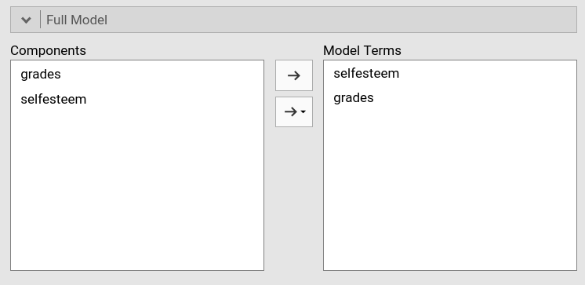
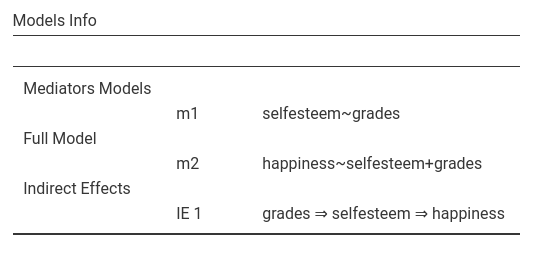
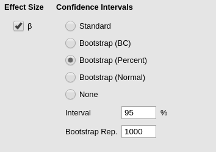

jAMM: simple mediation
(Marcello Gallucci)
keywords Mediation, simple mediation
This example shows how to estimate a simple mediation model with three variables in jAMM. Data come from University of Virginia Research Data Service and contain variables related to school achievement in a sample of students. There are three variables, school grades, self-esteem, and happiness, measured on quantitative scales (I renamed the variables to make the data more intuitive, with X=grades, M=selfesteem and Y=happiness. We also defined the variables as continuous in the data tab). The mediation model, explained here, is a classical simple mediation, as shown in the Figure.

jAMM
First, we launch the module under linear models menu. You can see in the results panel (right) that a simple mediation model path diagram is ready to be filled by selecting variables (left).

Input
In case of simple mediation, we simply need to define the role of the variables. So, we put happiness in the Dependent Variable field, selfesteem in the Mediators field, and grades in the Covariates (continuous independent variables) field.
When you define the variables role, the module understands the mediation model and updates the path diagram.

The model
In case of simple mediation, the module understands the intended statistical model, that can be checked in the Mediators models and Full model tabs.


The tabs simply indicate that the mediation model is composed by a linear regression with selfesteem as dependent and grades as independent, and one regression with happiness as dependent and selfesteem and grades as independent variables. These two models are also reported in the Model info result table.

In the Model info table you can also see how the module deduced what is the mediated effect to be computed, in our example grades -> selfesteem -> happiness.
In the mediation literature notation, these models are usually referred to as:
\[ M =k_1 + a \cdot X \]
\[ Y =k_2+ b \cdot M + c^\prime \cdot X\] (\(k_i\) are intercepts)
Results
Results report indirect (mediated), direct (unmediated) and total effects, under the Mediation section, in the Indirect and direct effects.

The Indirect row reports the mediated effect. Thus, this is the classical \(a \cdot b\) mediation effect, where \(a\) is the coefficient from grades to selfesteem and \(b\) is the coefficient from selfesteem to happiness, keeping constant grades. Coefficients \(a\) and \(b\) are the components of the mediated effect, and you can see them in the table in the Component rows. As expected, \(a \cdot b= .5610 \cdot .6355 = .3565\).
The z test associated with the mediated effect is the large sample z test of the mediated effect, which is a slightly more accurate version of the Sobel test. The confidence intervals are also computed using large sample approximation, but the bootstrap version of confidence intervals can be asked in the Mediation options tab (see below).
The Direct row shows the effect of the independent variable not mediated by selfesteem, the coefficient usually denoted by \(c^\prime\) in the mediation jargon. The Total effect is the overall effect of grades on hapiness, that is \(c=a \cdot b + c^\prime\). All the z tests associated with these coefficients test the null-hypothesis that the corresponding coefficient is zero. Confidence intervals are computed with the same method used for the indirect effect.
Finally, the \(\beta\) column shows the standardized solution coefficients.
Confidence intervals
By default, the jAMM computes the confidence intervals using the large sample delta method, that is using the z test as the starting point of computation. However, often users prefer to use a bootstrap method. That can be done in the Mediation options tab.

Several bootstrap methods can be selected. One of the most used in mediation analysis is the precentile method, which is jAMM is called bootstrap (Percent). See GLM mediation models for help on the other options. Please note that the bootstrap method can be very time-consuming and slow.

To recap, to estimate a simple mediation model, simply select the dependent, the independent, and the mediator variable, and the results will be shown in the results table.
If you are interested in checking the convergence of jAMM results with other software results, please visit the rosetta store Rosetta store: conditional mediation
Other examples
Comments?
Got comments, issues or spotted a bug? Please open an issue on GAMLj at github“ or send me an email